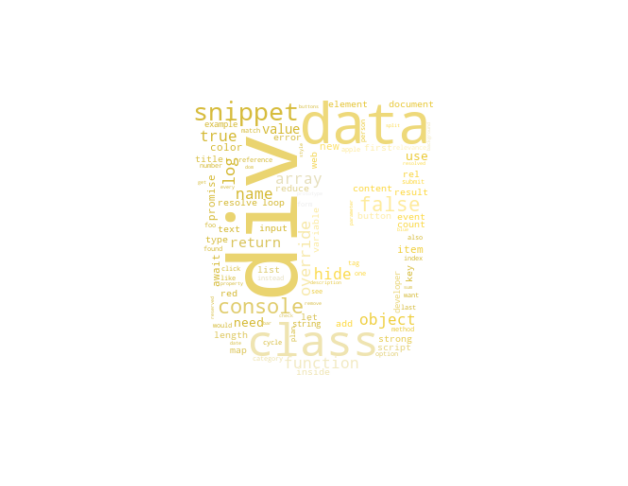
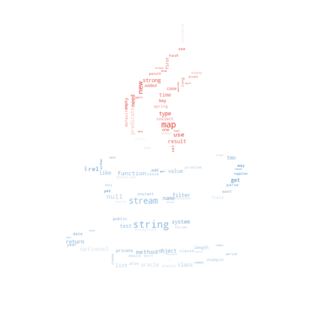
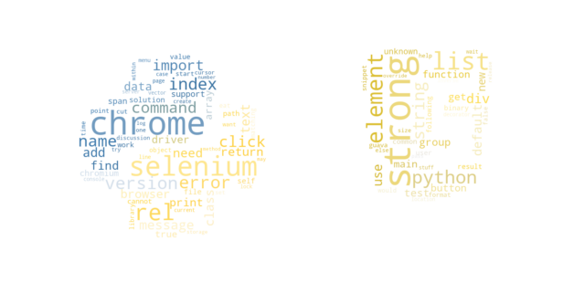
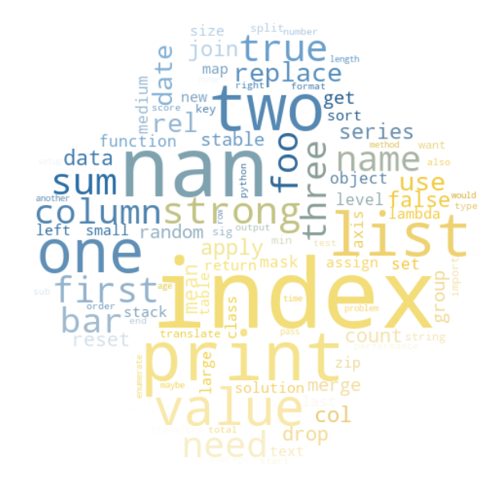
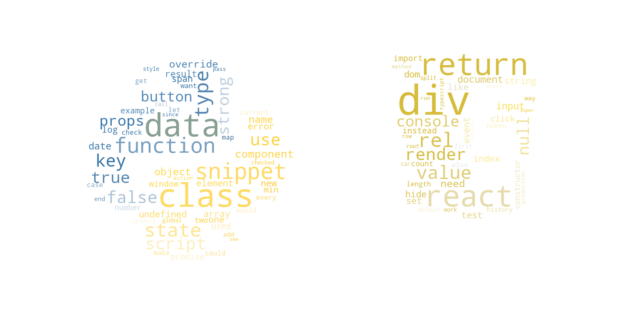

Data Analysis
In this page, we want to analyze the StackOverFlow network, from previous observations one can see that the
network consists of small users that are held together by a few highly engaged users. This analysis aims to
know
the characteristics of these super-users since the existence of StackOverflow
depends on them.
The approach to profile these superusers is by identifying and isolating a set of super users for each
community
to look at the textual content they have generated by applying wordclouds and sentiment analysis.
Community analysis
The communities between superusers were detected in the graph of all super users:

To understand how the communities are "grouped" on stackoverflow, and how they actaully interact across languauges, community analysis is conducted :

From the tables above, there is a clear community detection across the differnt languges. It is seen that the single
largest commuinity, the blue community, primarily consist of interactions regrarded javascript. The second and
third largest community of the 5 communities are "Java" and "Python".It is clearly seen for all communities
that they primarly interact with the communities "main" language.
Three largest Communites:
- Javascript
- Java
- Python
Examining the last two communites, it is seen that these are part of two of the larger communites, which is "Python" and "Javascript". It is seen that in the second largest "Python" community, there are actually far greater interaction between users, than in the largest "Python" community. Taking the last two communities into account and thier distirbution of languages ingaged with, the communites actually change. Addig the smaller "Python" and "Javacript" communites to the larger corrosponding communites, the three largest communites will look as following:
- Javascript
- Python
- Java
Looking back at our own defined network in the start, where a user was given the language he interacted with the most, it is seen that it was a faily good assumption, hence the community genreation from the greedy method resulted on nearly the same network, just a bit more defined.
Centrality analysis
To understand how dependent a community is on a specific users,it is interesting to analyze the network's centrality. Centrality measures aims at answering who is the most important or central users in this community. In this analysis, we define the activity of a top five communites by plotting betweenness centrality (on x axis to quantify the number of times a user binding other users together) against degree centrality (on y-axis to tell how much a user is central to it's community) .
Out of this chart, one can see that all communities have a handful of users having a significant high degree
and
betweeness centrality,
though the range of the measures vary a lot for each community. The most extreme case is found in the pure
python community, where three users is very important to the community.
This tells us, that by removing these users from each community there is a high risk that they will fall apart
since they bridging the majority of users through their engagement.
Now we can take the analysis one step closer to the end-goal of this work, by figuring out, what language
these
users use in their engangement and what sentiment does the tone have.
sentiment analysis
How is the tone of super-users?
This analysis is carried on a set of answers written by 93 super-users ,
to examine the tone of the answers these users have provided to their community, a sentiment analysis is
carried
out
It is worrying that most answers gets a sentiment of 5 (neutral). This could be because of the words used in
question-asnwering often has an objective and neutral character. Another reason could be that the language
used
by developers differs significantly from the common english language. The latter reason is indeed very
plausible
since the coding language do not have much in common with the spoken language.
To find the most negative communities, we filter answers below the sentiment score of 5 and average the
scores on community-level. The result is visualised in the next figure.
One can see that the average sentiment score of the most negative answers is more or less the same for each community. Only the Python-Javascript community sticks out being slightly more negative than the others. To analyse whether the sentiments makes sense, we need to investigate what words these negative answers contains. A nice way to do this is in a wordcloud where words with high TF-IDF score gets a large font-size.
Wordcloud
In this section we will take a closer look at what words are
used when the answers are considerably negative.
The table shows the top 30 words visualized for each superuser community, the wordclouds are plotted using language logo.
| Javascript community | Java community | Python- java community | Python community | Javacript- Python community |
|---|---|---|---|---|
|  |  |  |  |  |
These visualizations shows how words are based on code syntaxes,
considering these wordclouds are done on most negative answers from the super user, none seem negative.
This can be, as mentioned that the spoken language and programming language are differnt From
one another, e.g. the word "error" which is bad, but does not have negative sentiment when asking a
question about an error in a code.
Skimming through the wordclouds, it is becomes clear that the TF-IDF is indeed able to extract words "important" words for each community. Looking at the Python wordcloud, i becomes clear that many questions/answers are data processing problems, since words as "list", "index","drop", "column" and "lambda" appear. These words/syntax are typically used when playing with data using "pandas".
Another fun insight is is the sub-community of Python-Javascript. Eventhough the questin are python based, it is targeted towards a different segement. This can be seen from the word in the wordcloud. The word "selenium" is a python package used to automate web browser interaction from Python. This makes it clear, that this "segment" of python is not eyed on datahandling, but using python in the backend of webbrowsers.
From the Java wordcloud it is also possible to see syntax words. Here words such as "string", "object", "map" and "empty". From the basic Java knowledge, the group has, we are aware that data types have to be defined in Java, this could be why the word "string" appears to have an importance for Java. In Java most things are defined manually, and not as in python where it maps, most datatypes itself or a string by "".